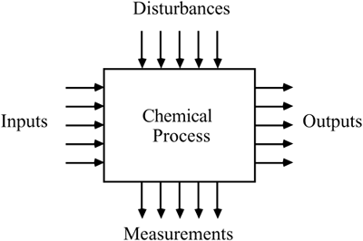

| [ Team LiB ] |
|
13.1 IntroductionThus far in this textbook we have focused primarily on SISO control systems. Most chemical processes, however, have many manipulated variables affecting many output variables, as shown in Figure 13-1. We generally assume that a desired output variable is also measured. In some cases (composition for example), an output variable cannot be measured and must be "inferred" from other measurements (such as temperatures and flow rates). Figure 13-1. General multivariable process. Although most processes are multivariable, SISO control loops are formed by selecting a measured output that is most strongly affected by a particular manipulated input. This is done for two reasons: SISO design techniques are easy to understand, and hardware and software are readily available for SISO controllers. We refer to control systems that use several SISO controllers on a multivariable process as MVSISO (multivariable single input–single output) controllers. The selection of which measured output to pair with which manipulated input is known as variable "pairing" and is the focus of much of this chapter. |
| [ Team LiB ] |
|